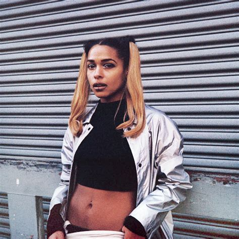

|  | Afro Indigenous-Boricua-New Yorker, Princess Nokia is
everything and more. Bringing her authintic, ever-evolving, shape-shifting self
into all of her projects, she tells many stories. This album "Metallic Butterfly"
was released back in 2018, and over two years, Princess' style has hatched from
cacoon to two albums in 2020, "Everything Sucks" and "Everything is Beautiful".
Princess Nokia touches effortlessly on the ideas of identity, including deep
social critiques, Native drum circles, life as an NYC teen, sisterhood, and
reclaiming her sexuality. I love Princess Nokia because she reminds and
exemplifies that I need not fit into one box or category, that there is strength
in growing and existing as who and what I choose to. Incorperating the
ancestral beats of her Indigenous Taíno Puerto Rican heritage with intoxicating
energy she crafts my favorite song on the
album, Bikini Weather / Corazon en Afrika.
|